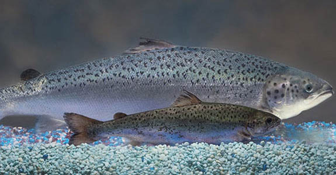

Geneetiliselt Muundatud Organism (GMO) on organism, kelle genoomi on geenitehnoloogiliste meetoditega muudetud. GMO-d on kasutusel nt ravimitööstuses, geeniteraapias ja põllumajanduses. GMO-de kasutamisega seoses on üles kerkinud mitmeid probleeme, näiteks teaduslike uuringute piisavus ning ettenägematud negatiivsed mõjud keskkonnale ja tervisele. Lisaks tekitab GMO-de tootmine ja kasutamine ka eetilisi ja moraalseid küsitavusi.
Selle missiooni käigus tutvute te geneetiliselt muundatud lõhe problemaatikaga. Teema on oluline, sest ametliku loa saamisel korral on GM lõhe esimene inimtoiduks toodetud geneetiliselt muundatud loom. Teema on mitmetahuline – kuigi GM lõhe on tõenäoliselt enim uuritud kala üldse, on siiski mitmeid küsitavusi, millega üldsus rahul ei ole. Teie ülesandeks on saada ülevaade GMO-de kasutamisega seotud teaduslikest, majanduslikest, juriidilistest ning eetilistest ja moraalsetest aspektidest. Missiooni eesmärgiks on saadud teadmiste põhjal leida vastus GMO-dega seotud dilemmaprobleemile.
Missiooni käigus määratakse sulle ühe eksperdi roll. Kokku on missioonis neli erinevat ekspertrolli: bioloogid, majandusteadlased, juristid ja loomakaitsjad. Õppimine toimub nii individuaalselt kui ka gruppides. Missiooni jooksul tuleb teil kirja panna viis otsust probleemile, kas Eestis on otstarbekas GMO lõhet kasvatada. Need on: esialgne otsus, esialgne valdkonna-spetsiifiline otsus, parandatud valdkonna-spetsiifiline otsus, ekspertkogu otsus ja lõplik otsus.
|  |
Samas vanuses AquAdvantage® lõhe (tagapool) ja mittetransgeense Atlandi lõhe (eespool) suuruste võrdlus. Foto: AquaBounty Technologies. |
Kui olete missiooni eesmärgiga tutvunud, avage missioonikaart ning liikuge edasi missiooni ossa Esialgne otsus.
Missiooni eduka läbimise järel oskate te:
| • | anda ülevaadet geneetika ja geenitehnoloogiaga seotud teadusharudest ning elukutsetest; |
| • | koguda, korrastada ning hinnata teavet; |
| • | analüüsida teavet geenitehnoloogia rakendamisega seotud teaduslikest, majanduslikest, seadusandlikest ja eetilistest probleemidest; |
| • | võtta otsuste tegemisel arvesse teaduslikke, majanduslikke, seadusandlikke, moraalseid ja eetilisi aspekte; |
| • | langetada pädevaid otsuseid lähtudes isiklikest ja ühiskondlikest aspektidest; |
| • | seostada omavahel DNA, kromosoomi, geeni, alleeli ja genotüübi mõisteid; |
| • | hinnata pärilikkuse ja keskkonnategurite mõju organismi fenotüübile; |
| • | kirjeldada geneetiliselt muundatud toidu ja sööda kasutamisega seotud majanduslikke aspekte; |
| • | anda ülevaadet geneetiliselt modifitseeritud toidu ja sööda kasutamisega seotud seadusandlusest; |
| • | selgitada loomade geneetilise muundamisega seotud eetilisi ja moraalseid aspekte. |